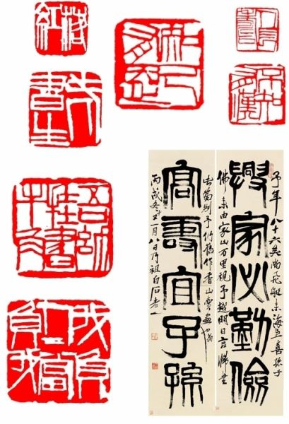

拈笔古心生篆刻，引觞侠气上云空。
篆刻艺术，是书法与镌刻的结合。用以制作印章的艺术，是汉字特有的艺术形式，迄今已有三千七百多年的历史。

何为篆刻?
“篆刻”二字，最初见于西汉扬雄（公元前53—公元18年）的《法言‧吾子》：“童子雕虫篆刻是也。”
篆刻，亦称治印、刻印，是将篆字刀刻于印上，由字法、章法、刀法组成，是一种独立艺术。
会员计划:
Be ONE
即刻加入
of us

哪些是经典的篆刻著作？
《学古篇》
元代吾丘衍著《学古编》，二卷，首列“三十五举”，
次载“合用文集品目”以及“附录”，叙述篆、隶书体的演变及篆刻知识。
吾丘衍的印风代表了篆刻艺术发展的主流，
他亦因著有“三十五举”而成为中国篆刻史上印学研究的先驱。
加入我们，你将能

香港篆刻历史
香港前辈印人是以广东人为主，而具有一定影响力和威望的篆刻家，则公推“香江五老”。
“五老”是指邓尔雅、罗叔重、冯康侯、陈语山、卢鼎公。
前四家之归类主要是直接或间接受粤派宗师黄士陵的印风所影响。
另外一位卢鼎公，则依循秦汉印而不逾矩，睥视六朝以下流派，故别树一帜。
明清时期有哪些篆刻名家与流派？
一、吴门派：文彭
文彭（1498—1573年），今江苏吴县人，字寿承，号三桥，文征明长子，曾任两京国子监博士。
对文字学、篆刻深有研究，被后人称之为流派篆刻的“鼻祖”。
文彭所刻印，早期以象牙居多，后来得青田冻石刻印。
他精研六书，主张篆刻应以六书为准则。
著名的篆刻家许高阳、王毂样、王梧林、陈居一、李长蘅、徐仲和、归文休等都属于这一派，其影响一直延续到清代。